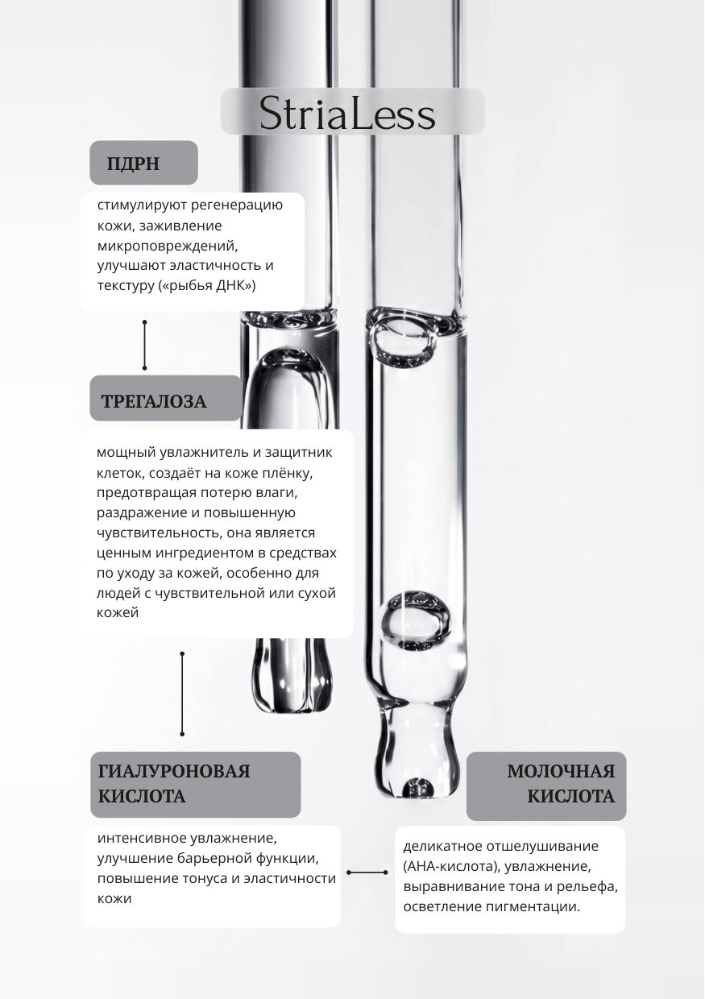
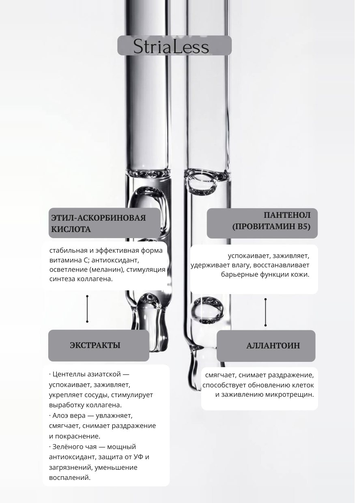

Состав сыворотки StriaLess
С этой сывороткой я работаю на процедуре. Ниже — её компоненты и что делает каждый.


Карточка производителя. Нажмите на страницу, чтобы открыть её в полном размере.
С этой сывороткой я работаю на процедуре. Ниже — её компоненты и что делает каждый.


Карточка производителя. Нажмите на страницу, чтобы открыть её в полном размере.